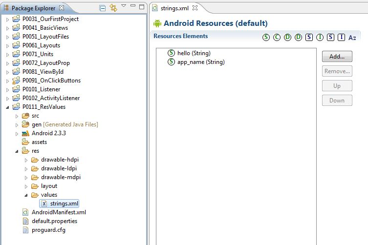
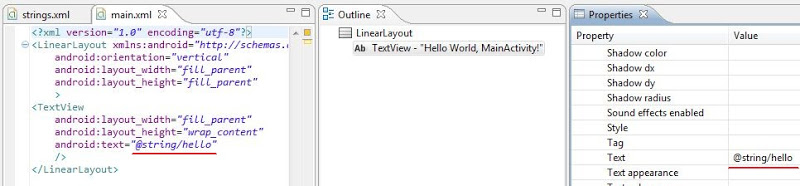
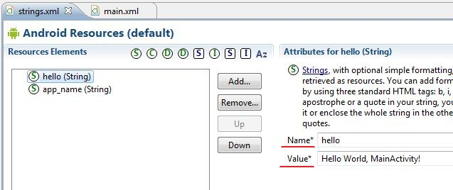
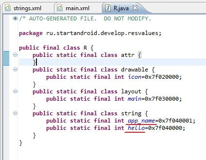
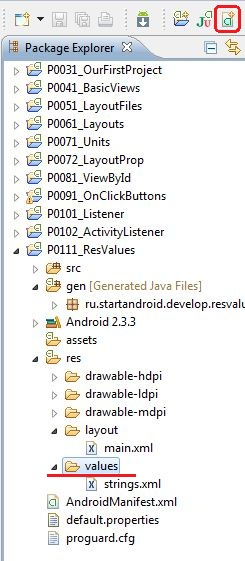
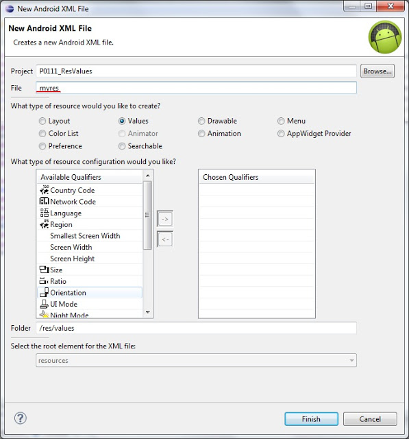
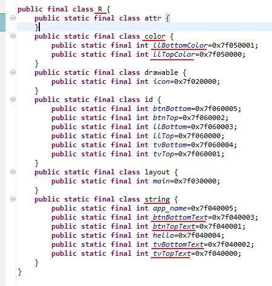
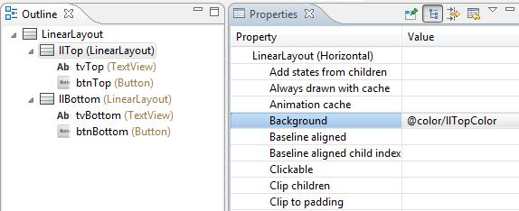

В этом уроке мы:
- узнаем, зачем нужна папка res/values, что в ней можно хранить и как использовать
В подпапках res хранятся различные ресурсы приложения. Мы уже отлично знаем про layout-файлы в папке res/layout. Я упоминал про папку res/drawable с density-суффиксами – в ней хранятся картинки. Теперь обратим внимание на папку res/values. Она предназначена для хранения ресурсов (констант) различных типов. Мы рассмотрим типы String и Color.
Создадим проект:
Project name: P0111_ResValues
Build Target: Android 4.0
Application name: ResValues
Package name: ru.startandroid.develop.resvalues
Create Activity: MainActivity
Откроем файл res/values/strings.xml

Мы видим два элемента типа String:
hello – по умолчанию он использован в свойстве Text в TextView в main.xml. И соответственно TextView отображает значение этого элемента.

app_name – по умолчанию используется как заголовок для приложения и Activity. Это указывается в манифест-файле, который мы еще не разбирали.
На эти элементы можно кликнуть и увидеть справа, что они собой представляют: имя (Name) и значение (Value)

Name – это ID. Оно должно быть уникальным, и для него в R.java создается константа, чтобы мы могли иметь доступ к этому String-элементу.

Если мы посмотрим XML-содержимое файла strings.xml (вкладка снизу – аналогично как для main.xml), то видим, что там все прозрачно и просто. Попробуем и мы использовать ресурсы.
Для начала создадим такой экран в main.xml:
<?xml version="1.0" encoding="utf-8"?>
<LinearLayout
xmlns:android="http://schemas.android.com/apk/res/android"
android:layout_height="match_parent"
android:layout_width="match_parent"
android:orientation="vertical">
<LinearLayout
android:layout_width="match_parent"
android:id="@+id/llTop"
android:orientation="vertical"
android:layout_weight="1"
android:layout_height="match_parent">
<TextView
android:text="TextView"
android:layout_width="wrap_content"
android:layout_height="wrap_content"
android:layout_gravity="center_horizontal"
android:id="@+id/tvTop"
android:layout_marginTop="30dp">
</TextView>
<Button
android:text="Button"
android:layout_height="wrap_content"
android:layout_gravity="center_horizontal"
android:id="@+id/btnTop"
android:layout_width="wrap_content">
</Button>
</LinearLayout>
<LinearLayout
android:layout_width="match_parent"
android:id="@+id/llBottom"
android:orientation="vertical"
android:layout_weight="1"
android:layout_height="match_parent">
<TextView
android:text="TextView"
android:layout_width="wrap_content"
android:layout_height="wrap_content"
android:layout_gravity="center_horizontal"
android:id="@+id/tvBottom"
android:layout_marginTop="30dp">
</TextView>
<Button
android:text="Button"
android:layout_width="wrap_content"
android:layout_height="wrap_content"
android:layout_gravity="center_horizontal"
android:id="@+id/btnBottom">
</Button>
</LinearLayout>
</LinearLayout>Экран разделен на две одинаковые половины, содержащие LinearLayout, Button и TextView. Для LinearLayout мы укажем фоновый цвет, а для TextView и Button – изменим текст. Реализуем это с помощью ресурсов. Причем View-элементы верхней части мы будем настраивать вручную через properties, а нижнюю часть попробуем настроить программно.
Давайте создадим свой файл с ресурсами в папке values, название пусть будет myres.


После создания открылся редактор файла. Добавлять элемент просто – жмем кнопку Add и выбираем тип, а справа пишем имя и значение. Создадим 4 String-элемента и 2 Color-элемента:
<?xml version="1.0" encoding="utf-8"?>
<resources>
<string name="tvTopText">Верхний текст</string>
<string name="btnTopText">Верхняя кнопка</string>
<string name="tvBottomText">Нижний текст</string>
<string name="btnBottomText">Нижняя кнопка</string>
<color name="llTopColor">#336699</color>
<color name="llBottomColor">#339966</color>
</resources>Для практики можете создать вручную, а можете просто вставить этот текст в содержимое myres.xml. Не забудьте сохранить. Заглянем в R.java, убедимся, что здесь все появилось:

Ок, ресурсы созданы, настроим View-элементы на их использование. Сначала верхние:
llTop – в Properties находим свойство Background, жмем кнопку выбора (три точки), в ветке Color выделяем llTopColor и жмем OK

tvTop – для свойства Text откройте окно выбора и найдите там tvTopText.
btnTop - для свойства Text откройте окно выбора и найдите там btnTopText.
Цвет верхней части изменился и тексты поменялись на те, что мы указывали в myres.xml.
Чтобы изменить нижнюю часть, будем писать код. Сначала находим элементы, потом присваиваем им значения.
public class MainActivity extends Activity {
/** Called when the activity is first created. */
@Override
public void onCreate(Bundle savedInstanceState) {
super.onCreate(savedInstanceState);
setContentView(R.layout.main);
LinearLayout llBottom = (LinearLayout) findViewById(R.id.llBottom);
TextView tvBottom = (TextView) findViewById(R.id.tvBottom);
Button btnBottom = (Button) findViewById(R.id.btnBottom);
llBottom.setBackgroundResource(R.color.llBottomColor);
tvBottom.setText(R.string.tvBottomText);
btnBottom.setText(R.string.btnBottomText);
}
}Обратите внимание на то, что для смены текста используется метод setText. Только это не тот же setText, что мы использовали, когда задавали текст напрямую. Этот на вход принимает ID и мы используем R.java, который хранит ID всех наших ресурсов. Т.е. методы называются одинаково, но на вход принимают разные параметры. Это нормальное явление в Java.
Сохраняем, запускаем и проверяем. Теперь тексты и цвета взяты из файла ресурсов. Вы можете изменить содержимое myres.xml (например текст для верхней кнопки), сохранить, запустить приложение и увидите изменения.
Иногда необходимо в коде получить не ID ресурса, а его значение. Это делается следующим образом:
getResources().getString(R.string.tvBottomText);Выражение вернет текст «Нижний текст», соответствующий String-ресурсу с name = tvBottomText.
Напоследок скажу пару слов об организации файлов для хранения ресурсов. Мы сейчас создали String и Color ресурсы в одном файле myres.xml, но рекомендуется их разделять по разным файлам (например strings.xml, colors.xml ...), и в дальнейшем я буду следовать этой рекомендации. Для этого есть причины, позже мы в этом убедимся.
Имена ресурсов сквозные для всех файлов в папке res/values. Т.е. вы не можете в разных файлах создать ресурс с одним именем и типом.
Имена файлов ресурсов могут быть произвольными и файлов можно создавать сколько угодно. В R.java попадут все ресурсы из этих файлов.